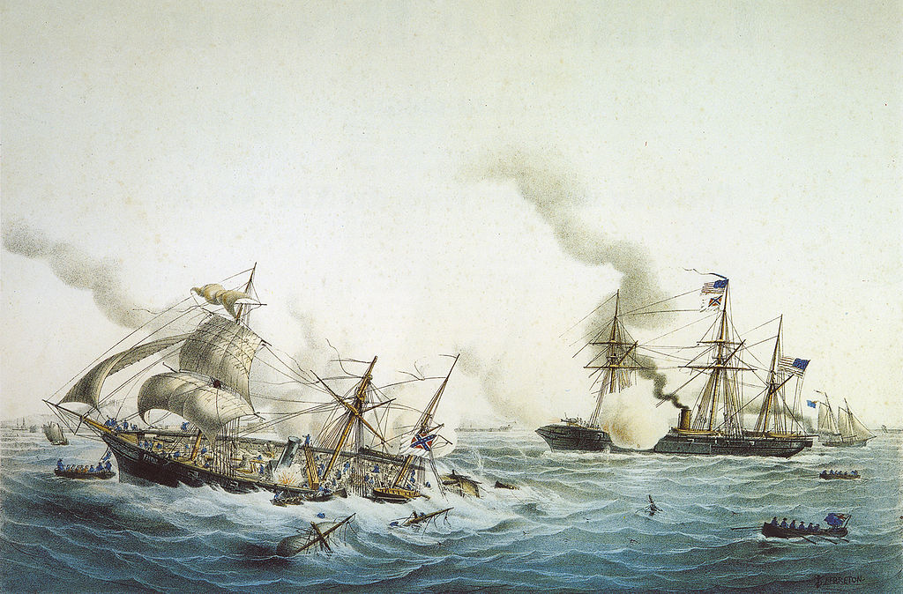

<head>
<meta charset="UTF-8" />
<meta name="keywords" content="drawing, painting" />
<meta name="description" content="drawings by Sunjy" />
<title>Sunjy</title>
<link rel="shortcut icon" type="image/x-icon" href="../../mImages/mCommon/favicon.ico" media="screen" />
<link rel="stylesheet" type="text/css" href="../../mCsses/mCommon/mCssA.css" />
<link rel="stylesheet" type="text/css" href="../../mCsses/mCommon/mCssB.css" />
<link rel="stylesheet" type="text/css" href="../../mCsses/mCommon/mCssC.css" />
<link rel="stylesheet" type="text/css" href="../../mCsses/mCommon/mCssD.css" />
<link rel="stylesheet" type="text/css" href="../../mCsses/mContent/mCssA.css" />
<link rel="stylesheet" type="text/css" href="../../mCsses/mContent/mCssB.css" />
<link rel="stylesheet" type="text/css" href="../../mCsses/mContent/mCssC.css" />
<link rel="stylesheet" type="text/css" href="../../mCsses/mContent/mCssD.css" />
</head>
<script type="text/javascript" src="../../mScripts/mContent/mContentAA.js" /></script>
<script type="text/javascript" src="../../mScripts/mContent/mContentAB.js" /></script>
<script type="text/javascript" src="../../mScripts/mContent/mContentAC.js" /></script>
<script type="text/javascript" src="../../mScripts/mContent/mContentAD.js" /></script>
<script type="text/javascript"></script> 
<script type="text/javascript">
document.write('<div class="mImgAbsolute"></div>');
/*
document.write('<p class="mFontSizeBColor" />From a white paper...</p>');
document.write('<table class="center"><tr><td>');
document.write('');
document.write('</td></tr></table>');
*/
</script>


<script type="text/javascript">
document.write('<p class="mFontSizeBColor" />Fight of the CSS Alabama and the USS Kearsarge </p>');
document.write('<p class="mFontSizeSColor" />By Louis Le Breton.<br><br>USS Kearsarge<br><br>The USS Kearsarge was a Mohican-class sloop-of-war and the only ship of the United States Navy named for Mount Kearsarge in New Hampshire. Subsequent ships were later named Kearsarge in honor of the ship.<br><br>Kearsarge was built at Portsmouth Navy Yard in Kittery, Maine, under the 1861 American Civil War emergency shipbuilding program.<br><br>The new 1,550 long tons (1,570 t) steam sloop-of-war was launched in 1861. Soon after, the USS Kearsarge was hunting for Confederate raiders in European waters.<br><br>CSS Alabama<br><br>The CSS Alabama was a screw sloop-of-war built in 1862 for the Confederate States Navy at Birkenhead on the River Mersey opposite Liverpool, England.<br><br>CSS Alabama served as a successful commerce raider, attacking Union merchant and naval ships throughout her two-year career, during which she never docked at a Southern American port.<br><br>She was sunk in June 1864 by USS Kearsarge at the Battle of Cherbourg outside the port of Cherbourg, France.<br></p>');
document.write('<table class="center" /><tr><td>');
document.write('<br>USS Kearsarge<br><br>The USS Kearsarge was a Mohican-class sloop-of-war and the only ship of the United States Navy named for Mount Kearsarge in New Hampshire. Subsequent ships were later named Kearsarge in honor of the ship.<br><br>Kearsarge was built at Portsmouth Navy Yard in Kittery, Maine, under the 1861 American Civil War emergency shipbuilding program.<br><br>The new 1,550 long tons (1,570 t) steam sloop-of-war was launched in 1861. Soon after, the USS Kearsarge was hunting for Confederate raiders in European waters.<br><br>CSS Alabama<br><br>The CSS Alabama was a screw sloop-of-war built in 1862 for the Confederate States Navy at Birkenhead on the River Mersey opposite Liverpool, England.<br><br>CSS Alabama served as a successful commerce raider, attacking Union merchant and naval ships throughout her two-year career, during which she never docked at a Southern American port.<br><br>She was sunk in June 1864 by USS Kearsarge at the Battle of Cherbourg outside the port of Cherbourg, France.<br>" />');
document.write('</td></tr></table>');
</script>


